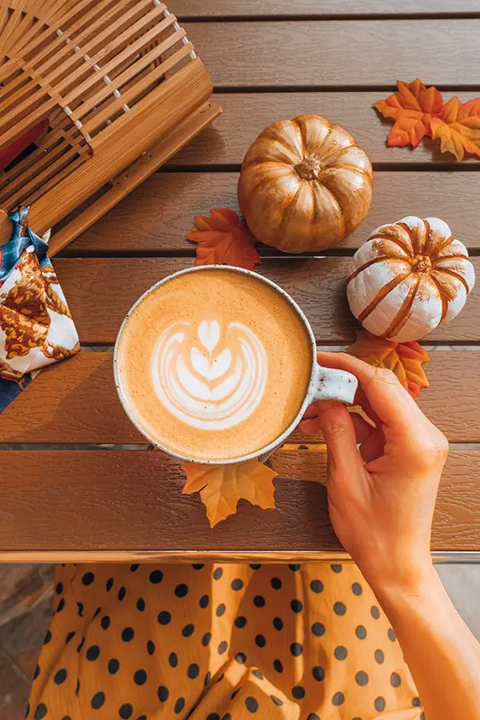
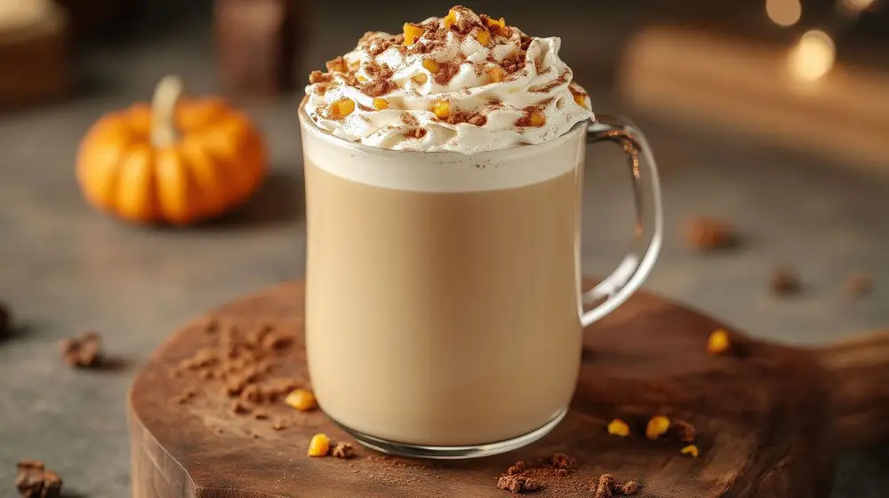
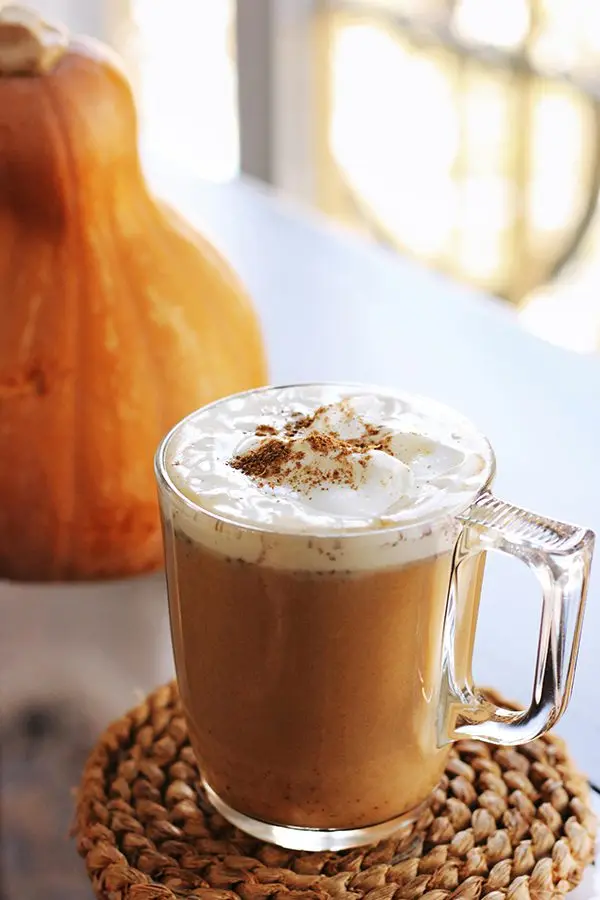

文章 / 飲品配方與資訊
Enjoy a comfy Autumn with Pumpkin Spice Boba!
這篇是英文原文，尚未完成繁體中文翻譯。中文選單與相關商品連結不會切回英文介面。

查看英文原文（尚未翻譯）
Feeling that breeze bringing in copper-red leaves? That’s right, autumn in just round the corner!
Which means it’s time for the ol’ reliable – pumpkin spice latte (PSL)!
However, there’s more to this classic drink than just the usual lattes, why not give it a bubble-tea-themed spin?
Read on to learn more!

What’s Pumpkin Spice?
As autumn rolls in and people start preparing for Thanksgiving, in coffee shops everywhere is the unmistakable aroma of pumpkin spice. Coffees, cakes, sweets…you name it, there’s a pumpkin spice variant of it!
Despite the name, pumpkin isn’t the main character of this combination. In fact, the original Pumpkin Spice Latte doesn’t even have pumpkin in it!
Rather the focus is on the spice – a blend of spices commonly found in pumpkin pie fillings. This usually includes cinnamon, nutmeg, cloves, ginger and more.
Pumpkin spice itself has been around for a while – similar spice mixes has its roots in the Medieval ages, and the first American “Pompkin Spice” recipe hailed from the 17th century.
However, it’s Starbucks (who else?) who popularized the Pumpkin Spice Latte! They first test-ran the drink back in 2003, which turned out to be a smash hit! PSL quickly outsold the Chrismassy Peppermint Mocha, firmly cementing its place as Starbuck’s best-selling seasonal drink.

What makes it so great?
Although nay-sayers swear up and down that the flavour is already past its prime, sales figures say otherwise: In 2024, Starbucks’ single-day sales shot up by almost 25% once PSL made its comeback. Even now, the return of the drink heralds the start of the fall season, with PSL-addicts eagerly counting down the days until it finally hits the menus.
It’s not hard to see why: This classic blend of spices not only warms you up, but also brings a nostalgic vibe! Think thanksgiving parties with delicious sweet pies, or sipping on a spiced chocolate while wrapped in fluffy blankets. Meanwhile, just the right hint of pumpkin gives it the perfect balance of sweet and savoury, leaving you wanting for more!
People usually think bubble tea is a summer drink, but who says you can’t enjoy it during the colder seasons? Give your boba a spice-flavoured kick, and enjoy a classic autumn drink in a different way!

Pumpkin Spice Boba
A boba-tastic spin to the classic Autumn treat, the tapioca pearls add a delightful chew alongside the creamy spiced milk tea!
What you’ll need
How to make
Add the flavoured powder to hot water/milk and mix.
Cook the tapioca pearls, then add to a cup/glass. Add the beverage mix from step 1.
Blend the cream top powder with milk to form a silky foam. Ladle the foam onto the drink, then dust with cinnamon powder. Enjoy!
Can’t get enough of pumpkin? Try blending some pumpkin or squash into the bubble tea mix. Prefer something sweeter? Add a dash of brown sugar syrup for some extra smoky-sweet goodness!
There’s more!
Need more inspiration for fall-themed and other seasonal bubble tea? We’ve got your back.
Check out our selection of recipes, and pick up the ingredients from us to get started!